Almost every number a marketing manager sees comes from a sample: the satisfaction score from last month’s customer survey, the conversion rate in an A/B test, the share of users who say they would recommend the app. None of these numbers is the “true” value — they are estimates, and a different sample would have produced a slightly different number. This chapter is about how large that uncertainty is, where it comes from, and how to express it honestly. After working through this chapter you will be able to:
Distinguish population and sample, and parameters and statistics — and explain why any number computed from a sample is uncertain
Explain sampling variation and the sampling distribution
Compute and interpret the standard error, and explain how it depends on the sample size and on the variability in the data
Explain what the central limit theorem says and why it matters in practice
Construct and correctly interpret confidence intervals for means and for shares — including the margin of error of a poll
Distinguish random error, which statistics can quantify, from systematic error (bias), which it cannot
The chapter builds intuition with simulations and interactive widgets first; the formulas follow the intuition, not the other way round. Take the time to play with the widgets — they are the fastest way to understand what the formulas say.
3.1 Motivation: is the difference real?
3.1.1 An A/B test at a streaming service
Imagine you work in the product team of a music streaming service. The team has developed a new feature — Smart Mix, a personalized mix on the home screen that updates every day — and wants to know whether it makes users listen more. Following the lesson of Section 1.6, the team runs an A/B test: 400 randomly selected users are randomly split into two groups of 200. The treatment group sees Smart Mix; the control group sees the usual home screen. After four weeks, the team compares the listening hours of the two groups.
The analytics dashboard shows the result the way dashboards usually do: as two group means (Figure 3.1).
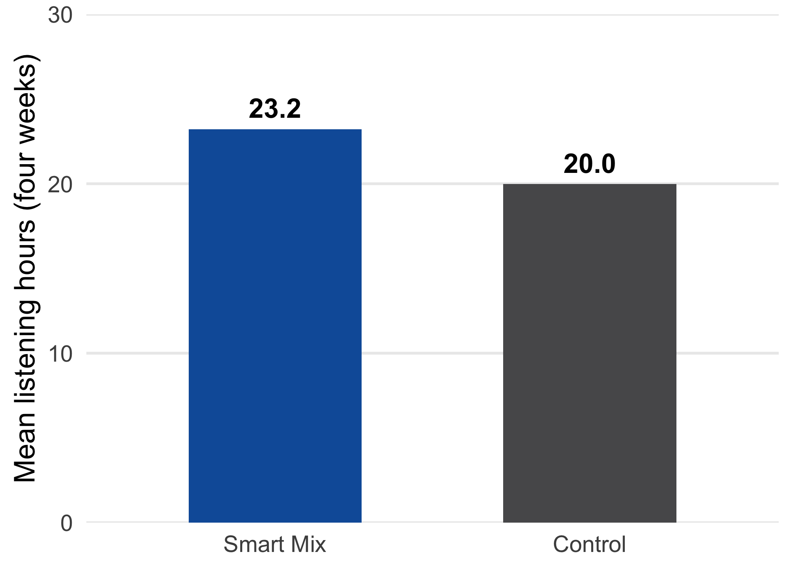
Figure 3.1: The dashboard view of the (simulated) A/B test: mean listening hours per group.
Users with Smart Mix listened 3.2 hours more on average. Would you roll out the feature to all users? Most people hesitate at this point, and for good reason: two bars show two numbers and hide everything else. How many users are behind each bar? How much do they differ from each other? Is the difference carried by all users, or by a few heavy listeners? A bar chart of means cannot answer any of this. The data can — at least partly. Figure 3.2 shows every user as a dot, with the mean and the median of each group:
# A tibble: 2 × 5
group n mean_hours median_hours sd_hours
<fct> <int> <dbl> <dbl> <dbl>
1 Smart Mix 200 23.2 19.2 16.2
2 Control 200 20.0 16.4 13.7
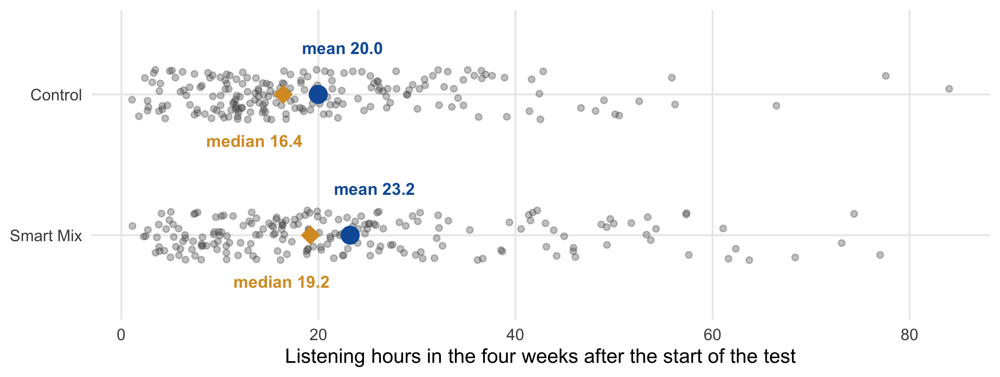
Figure 3.2: The same A/B test, user by user: listening hours of 200 users per group in the four weeks after the start of the test. Each grey dot is one user; blue dots mark the group means, orange diamonds the medians.
Seeing the data changes the picture. There are 200 users per group — not a huge sample. The two groups overlap almost completely: many users in the control group listened more than many users with Smart Mix. And in both groups, the mean sits above the median: a few heavy listeners on the right pull the means up, so part of the 3.2-hour difference may be carried by a handful of users (Chapter 2). What the data cannot settle is the last question: would the difference look the same with another 400 users? Could it be that Smart Mix does nothing at all, and the difference is just the luck of the draw?
Analysts answer such questions with a statistical test. In R, one line suffices:
t.test(hours ~ group, data = ab_test)
Welch Two Sample t-test
data: hours by group
t = 2.1617, df = 386.96, p-value = 0.03125
alternative hypothesis: true difference in means between group Smart Mix and group Control is not equal to 0
95 percent confidence interval:
0.293571 6.196096
sample estimates:
mean in group Smart Mix mean in group Control
23.21980 19.97497
The output contains several numbers you do not know yet — a t value, degrees of freedom (df), a p-value, and a “95 percent confidence interval”. By the end of this chapter, you will understand where the confidence interval comes from and what it means; in the next chapter, we return to this A/B test and read the complete output.
3.1.2 Why we need statistical inference
The key to all of these questions is one simple observation: the team observed 400 users, but the decision concerns all users — millions of them. The 400 users are a sample; all users of the service are the population. The mean listening time of the Smart Mix group is not “the effect of Smart Mix” — it is an estimate, and a different random sample of 400 users would have produced a different estimate. The same holds for the difference between the groups.
Statistical inference is the set of tools for drawing conclusions about a population from a sample — and for saying how sure we can be about them. Randomization (Section 1.6) guarantees that the comparison between the two groups is fair; statistical inference tells us whether it is precise enough to distinguish a real effect from the noise of sampling.
3.1.3 What would make the difference more convincing?
Before we build the tools, two thought experiments give a feel for what “precise enough” depends on. In both, the group means stay exactly the same — 23.2 vs. 20.0 hours — and only the data around them change.
Thought experiment 1: a larger sample. Suppose the team had run the test with 2,000 users per group instead of 200, and had found the same means:
Show how the larger sample was constructed
ab_means <- ab_test |>group_by(group) |>summarise(m =mean(hours))set.seed(32)ab_large <-tibble(group =factor(rep(c("Control", "Smart Mix"), each =2000), levels =c("Smart Mix", "Control")),hours =c(rgamma(2000, shape =2, scale =10), rgamma(2000, shape =2, scale =11.5))) |>group_by(group) |>mutate(hours = hours * ab_means$m[match(group, ab_means$group)] /mean(hours)) |># same means as beforeungroup()
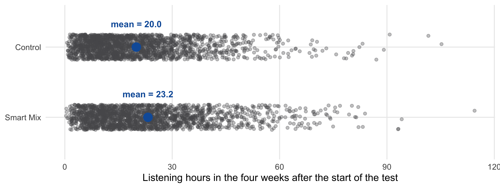
Figure 3.3: The same A/B test with 2,000 users per group and identical group means.
t.test(hours ~ group, data = ab_large)
Welch Two Sample t-test
data: hours by group
t = 6.8057, df = 3960.5, p-value = 0.00000000001157
alternative hypothesis: true difference in means between group Smart Mix and group Control is not equal to 0
95 percent confidence interval:
2.310072 4.179595
sample estimates:
mean in group Smart Mix mean in group Control
23.21980 19.97497
The difference is still 3.2 hours — but t has jumped from 2.2 to 6.8, the p-value has dropped from 0.03 to about 10⁻¹¹, and the confidence interval has shrunk from [0.3; 6.2] to [2.3; 4.2] hours. Nothing about the estimate changed; what changed is how sure we can be about it. Ten times as many users make the same difference far harder to explain away as the luck of the draw.
Thought experiment 2: more similar users. Now keep the original 400 users, but imagine they were more alike: pull each user’s listening time halfway toward their group mean, so that the means stay the same and the spread within each group is cut in half:
# A tibble: 2 × 4
group n mean_hours sd_hours
<fct> <int> <dbl> <dbl>
1 Smart Mix 200 23.2 8.11
2 Control 200 20.0 6.84
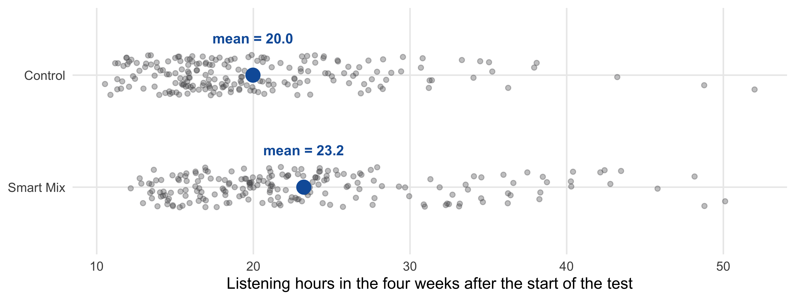
Figure 3.4: The original 400 users, with the spread within each group halved and the group means unchanged.
t.test(hours ~ group, data = ab_similar)
Welch Two Sample t-test
data: hours by group
t = 4.3234, df = 386.96, p-value = 0.00001957
alternative hypothesis: true difference in means between group Smart Mix and group Control is not equal to 0
95 percent confidence interval:
1.769202 4.720465
sample estimates:
mean in group Smart Mix mean in group Control
23.21980 19.97497
Again the same 3.2 hours — and again a larger t (4.3), a much smaller p-value, and a narrower interval. When users within a group are more alike, a group mean computed from 200 of them is a more reliable number, and so is the difference between two such means.
Table 3.1: Three versions of the same difference
Users per group
Spread (SD)
t
p
95% interval
Original test
200
16.2 / 13.7
2.2
0.03
[0.3; 6.2]
Larger sample
2,000
15.8 / 14.3
6.8
< 0.001
[2.3; 4.2]
More similar users
200
8.1 / 6.8
4.3
< 0.001
[1.8; 4.7]
Table 3.1 summarizes the two experiments. The uncertainty about a difference depends on just two things: how many observations we have, and how different they are from each other. The rest of this chapter makes this precise: the measure of that uncertainty is the standard error, and in Section 3.4 you will see that it is the spread divided by the square root of the sample size — exactly the two ingredients of the table.
3.1.4 The plan for this chapter
The A/B test will accompany us through the whole chapter. Its outcome is continuous (listening hours), so the first stop is the uncertainty of a mean: how much a sample mean varies from sample to sample (Section 3.3), how to measure that variation with the standard error (Section 3.4), why the normal distribution keeps showing up (Section 3.5), and how to turn an estimate into a confidence interval (Section 3.6). Many marketing outcomes are categorical instead — a user converts or does not, a voter supports a candidate or does not — and for such shares, the same question returns in Section 3.7, where we meet it in its most familiar form: the margin of error of an election poll. Finally, Section 3.8 puts everything into R, and the A/B test’s output stops being a mystery.
3.2 Populations and samples
3.2.1 From the sample to the population
The population is the entire group we want to draw conclusions about: all voters, all customers of a brand, all WU students, all stores of a retail chain. A census collects data from every member of the population. Censuses are rare in marketing — they are expensive, slow, and often impossible (you cannot survey all future customers). Instead, we study a sample: a subgroup of the population, which we use to learn about the whole. Generalizing from the sample to the population is called statistical inference.
To keep the two levels apart, statistics uses different symbols for the same quantity in the population (a parameter, usually a Greek letter) and in the sample (a statistic, usually a Latin letter; Table 3.2).
Table 3.2: Notation for samples and populations
Sample (statistic)
Population (parameter)
Number of observations
\(n\)
\(N\)
Mean
\(\bar{x}\) (“x-bar”)
\(\mu\) (“mu”)
Standard deviation
\(s\)
\(\sigma\) (“sigma”)
Share (proportion)
\(\hat{p}\) (“p-hat”)
\(p\)
The population parameters are what we would like to know; the sample statistics are what we can compute. The rest of this chapter is about the bridge between the two.
3.2.2 How the sample is drawn matters
Whether a sample allows conclusions about the population depends on how it was drawn (Table 3.3).
Table 3.3: Probability and non-probability sampling
Probability sampling
Non-probability sampling
Principle
Every member of the population has a known chance of being selected; selection is random
Selection by convenience or by the researcher’s judgment
Techniques
Simple random sampling; stratified sampling (random draws within subgroups); cluster sampling (random draws of whole groups, e.g., stores); systematic sampling (every k-th element of a list)
Convenience sampling (whoever is easy to reach); quota sampling (fill quotas, e.g., by age and gender); judgmental sampling; snowball sampling (respondents recruit further respondents)
Uncertainty
Can be quantified with the methods of this chapter
Cannot be quantified reliably — the sample may be systematically different from the population
In a simple random sample, every member of the population has the same chance of being selected — the benchmark design that all methods in this chapter assume. Real-world samples often fall short of this ideal, for three common reasons:
Under-coverage: parts of the population are not in the sampling frame at all (e.g., an online survey misses customers without internet access).
Non-response bias: the people who do not respond differ from those who do (e.g., dissatisfied customers ignore the satisfaction survey — or, conversely, only they answer).
Voluntary response bias: respondents select themselves, typically those with strong opinions (e.g., online reviews, polls on a website).
3.2.3 Two kinds of error
The three problems above all produce the same kind of error — and it is worth distinguishing it clearly from the one this chapter is mainly about. Every estimate from a sample is subject to two kinds of error (Figure 3.5):
Random error (or sampling variation): each sample contains, by chance, a slightly different mix of people, so each estimate lands slightly off target — sometimes too high, sometimes too low. Random error is unavoidable, but it can be quantified, and it shrinks as the sample grows. The margin of error is a statement about random error.
Systematic error (or bias): the sample differs from the population in a systematic way — because some groups are harder to reach, less willing to answer, or not in the sampling frame at all. Bias pushes every estimate in the same direction, and a larger sample does not help: it only makes the wrong answer more precise. You met this problem in Chapter 1 (the “more confidently wrong” widget) and in Section 2.5.6 (the charts contain only the hits). The most famous recent example is the polling miss of the 2016 US election, which we come back to in Section 3.7.
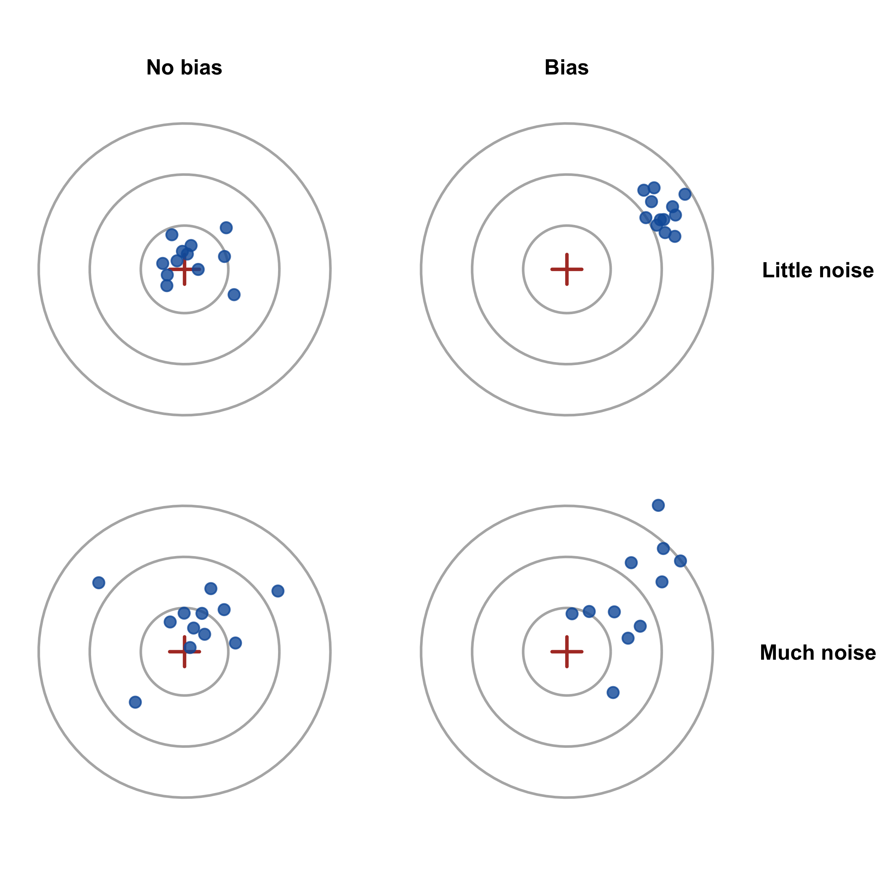
Figure 3.5: Two kinds of error. Each dot is the estimate from one sample; the cross is the true value. Random error (noise) scatters the estimates around the truth; systematic error (bias) shifts them away from it.
In the A/B test, randomization protects the comparison against systematic error: the two groups differ only by chance and by the feature (Section 1.6). Random error, however, remains — the 200 users in each group are still a random draw. This chapter is about this first kind of error: how to quantify it. The second kind returns at the end of the chapter (Section 3.9) — as the reminder of what no confidence interval can tell you.
NoteWhat this means for your group project
The survey in your group project will be a convenience sample — friends, fellow students, family. That is fine for learning, and it is common in practice, but be honest about it: the confidence intervals you compute describe the random error as if your sample were random; they say nothing about how well your respondents represent a larger population. The good news: for your experiment, this matters much less. Because the conditions are assigned randomly within your sample, the comparison between the conditions is still fair — randomization protects the comparison even when the sample itself is not representative (Section 1.6).
3.3 Sampling variation
3.3.1 A world in which we know the truth
In reality, we never know the population values — that is why we sample. To understand what sampling does, however, it helps to start in a world in which we do know them. We therefore simulate one: suppose there are 25,000 students at WU, and each of them has told us how many hours they listened to music (on Spotify and similar services) in the past month. Figure 3.6 shows the distribution. Because we generated the data ourselves, we know the true population values exactly: the population mean is \(\mu\) = 49.93 hours, and the population standard deviation is \(\sigma\) = 10.02 hours.
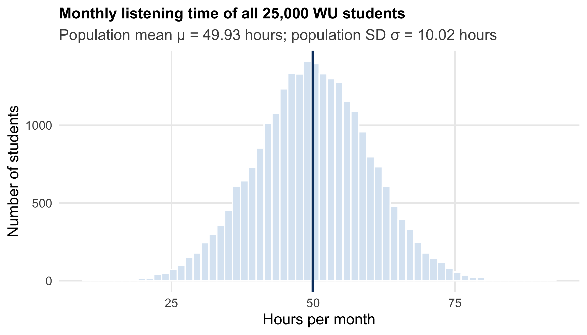
Figure 3.6: The (simulated) population: monthly listening time of all 25,000 WU students.
3.3.2 One sample, then another
Now we play market researcher. We cannot ask all 25,000 students, so we draw a random sample of 100 students and compute their average listening time. Then we do it again, with a new random sample — and again. Figure 3.7 shows four such samples.
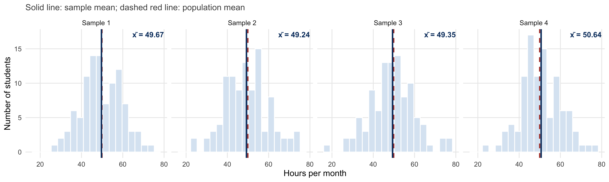
Figure 3.7: Four random samples of 100 students each from the same population. Each sample has a (slightly) different mean.
Each sample mean is close to the population mean — but none hits it exactly, and each is different. This is sampling variation: which students happen to end up in the sample is a matter of chance, and so the sample mean varies from sample to sample. Sampling variation is not a mistake; it is the unavoidable consequence of looking at a part instead of the whole. The question is only how large it is.
// ---- shared helpers for all widgets of this chapter ----html`<style> .unc-widget form { width: auto !important; max-width: none !important; } .unc-widget form > div { display: flex; flex-wrap: wrap; gap: 0.5em; } .unc-widget form button { background: #0f5da8 !important; color: #fff !important; border: none; border-radius: 6px; padding: 0.45em 0.9em; font-weight: 600; cursor: pointer; width: 11.5em; white-space: nowrap; text-align: center; margin: 0; } .unc-widget form button:hover { background: #0a3d6e !important; } .unc-stats { font-size: 0.95em; margin: 0.3em 0 0.6em 0; }</style>`
functionqnorm(p) {// inverse of the standard normal distribution (Acklam's algorithm)const a = [-3.969683028665376e+01,2.209460984245205e+02,-2.759285104469687e+02,1.383577518672690e+02,-3.066479806614716e+01,2.506628277459239e+00];const b = [-5.447609879822406e+01,1.615858368580409e+02,-1.556989798598866e+02,6.680131188771972e+01,-1.328068155288572e+01];const c = [-7.784894002430293e-03,-3.223964580411365e-01,-2.400758277161838e+00,-2.549732539343734e+00,4.374664141464968e+00,2.938163982698783e+00];const d = [7.784695709041462e-03,3.224671290700398e-01,2.445134137142996e+00,3.754408661907416e+00];const pl =0.02425, ph =1- pl;let q, r;if (p < pl) { q =Math.sqrt(-2*Math.log(p));return (((((c[0]*q+c[1])*q+c[2])*q+c[3])*q+c[4])*q+c[5]) / ((((d[0]*q+d[1])*q+d[2])*q+d[3])*q+1); }if (p <= ph) { q = p -0.5; r = q * q;return (((((a[0]*r+a[1])*r+a[2])*r+a[3])*r+a[4])*r+a[5])*q / (((((b[0]*r+b[1])*r+b[2])*r+b[3])*r+b[4])*r+1); } q =Math.sqrt(-2*Math.log(1- p));return-(((((c[0]*q+c[1])*q+c[2])*q+c[3])*q+c[4])*q+c[5]) / ((((d[0]*q+d[1])*q+d[2])*q+d[3])*q+1);}
// the population of 25,000 WU students (normal, mean 50, SD 10)w_pop = {const rnd = d3.randomNormal.source(d3.randomLcg(321))(50,10);returnFloat64Array.from({length:25000}, () =>rnd());}
w_mu = d3.mean(w_pop)
w_sigma = d3.deviation(w_pop)
TipTry it: the sampling machine
Each click draws random samples of students from the population above and records their mean — 100 students per sample by default; switch to 10 or 1,000 to see what the sample size does. The first chart shows the population, with the students of the latest sample marked as orange lines; the second chart collects the means of all samples drawn so far. Start with single samples, then draw a thousand at once.
viewof w1_draws = Inputs.button( [["Draw 1 sample", v => v +1], ["Draw 100 samples", v => v +100], ["Draw 1,000 samples", v => v +1000], ["Reset", v =>0]], {value:0})
viewof w1_n = Inputs.radio([10,100,1000], {value:100,label:"Students per sample",format: d => d.toLocaleString("en")})
w1_sim = {const rng = d3.randomLcg(2026);const n = w1_n, means = [];let last = [];for (let k =0; k < w1_draws; k++) {const s =Array.from({length: n}, () => w_pop[Math.floor(rng() * w_pop.length)]); means.push(d3.mean(s)); last = s; }return {means, last, n};}
{const left = Plot.plot({width:380,height:260,marginLeft:50,x: {label:"Hours per month",domain: [10,90]},y: {label:"Students",grid:true},marks: [ Plot.rectY(w_pop, Plot.binX({y:"count"}, {x: d => d,thresholds:40,fill:"#dbe7f3"})), Plot.ruleX(w1_sim.last, {x: d => d,y1:0,y2:250,stroke:"#d99a2b",strokeWidth:1.2,strokeOpacity:0.8}), Plot.ruleX([w_mu], {stroke:"#b03a2e",strokeWidth:2,strokeDasharray:"4,3"}), w1_sim.last.length? Plot.ruleX([d3.mean(w1_sim.last)], {stroke:"#d99a2b",strokeWidth:3}) :null ] });const right = Plot.plot({width:380,height:260,marginLeft:50,x: {label:"Sample mean (hours per month)",domain: [35,65]},y: {label:"Samples",grid:true},marks: [ Plot.rectY(w1_sim.means, Plot.binX({y:"count"}, {x: d => d,thresholds: d3.range(35,65.01,0.25),fill:"#0f5da8"})), Plot.ruleX([w_mu], {stroke:"#b03a2e",strokeWidth:2,strokeDasharray:"4,3"}), Plot.ruleY([0]) ] });returnhtml`<div style="display:flex; flex-wrap:wrap; gap:1em;"> <div><b>Population (25,000 students)</b>${left}</div> <div><b>Means of all samples drawn so far (${w1_sim.n.toLocaleString("en")} students each)</b>${right}</div></div>`;}
{const m = w1_sim.means, k = m.length;if (k ===0) returnhtml`<div class="unc-stats">No samples drawn yet — click a button above.</div>`;returnhtml`<div class="unc-stats"> Samples drawn: <b>${k.toLocaleString("en")}</b> · latest sample mean: <b>${m[k -1].toFixed(2)}</b> hours · mean of all sample means: <b>${d3.mean(m).toFixed(2)}</b> (true mean: ${w_mu.toFixed(2)})${k >1?html` · standard deviation of the sample means: <b>${d3.deviation(m).toFixed(2)}</b> (predicted by σ/√n: ${(w_sigma /Math.sqrt(w1_sim.n)).toFixed(2)})`:""} </div>`;}
What to look for. Every single sample mean misses the true mean (dashed red line) a little. But the means pile up around the true value, symmetrically, in a bell shape — and hardly any of them are more than two to three hours off. Then switch the sample size: the same number of samples piles up much more tightly with 1,000 students per sample, and spreads out with 10 — a first look at the standard error (Section 3.4).
3.3.3 The sampling distribution
The second chart of the widget — the means of all samples — has a name: it shows the sampling distribution of the sample mean — the distribution of the means we would get if we could repeat our study over and over again. In reality, we never see it; we only ever have one sample. But it describes how much we can trust that one sample. Figure 3.8 shows the sampling distribution for 20,000 samples of 100 students each.
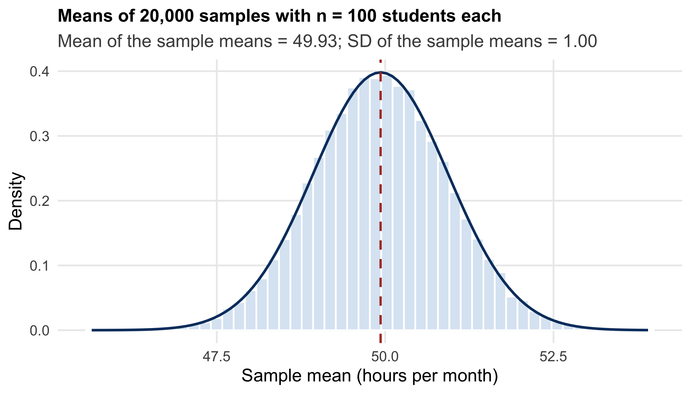
Figure 3.8: The sampling distribution: the means of 20,000 random samples of 100 students each. The dashed line marks the population mean.
Three properties of the sampling distribution are the foundation of everything that follows:
It is centered on the truth. The mean of all sample means equals the population mean. On average, the sample mean neither over- nor underestimates — it is an unbiased estimate.
It has a known width. The sample means scatter around the population mean by a predictable amount. This width is called the standard error (Section 3.4).
It has a known shape. The sample means follow a bell-shaped, normal distribution — and, as Section 3.5 shows, this holds even when the data themselves are not normally distributed.
Together, these three properties allow us to say something about the population from a single sample: not the exact value, but a range of plausible values.
3.4 The standard error
3.4.1 How precise is a sample mean?
The width of the sampling distribution — its standard deviation — tells us how precise a sample mean is. It is called the standard error of the mean and, remarkably, it can be calculated without drawing thousands of samples:
\[
\sigma_{\bar{x}} = \frac{\sigma}{\sqrt{n}}
\]
In words: the standard error equals the standard deviation in the population (\(\sigma\)) divided by the square root of the sample size (\(n\)). For our example: \(\sigma_{\bar{x}}\) = 10.02 / \(\sqrt{100}\) = 1.00 hours — exactly the width of the simulated sampling distribution in Figure 3.8. The formula contains the two things that determine precision.
The sample size. The more students in the sample, the more closely the sample mean approaches the population mean (Figure 3.9). Think of the extremes: a “sample” of one student can land almost anywhere in the population distribution; a sample of 24,999 students will be almost exactly right.
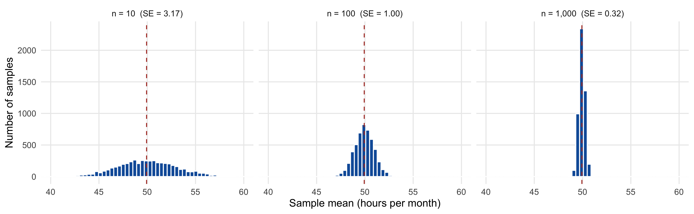
Figure 3.9: Sampling distributions for three sample sizes (5,000 samples each). The larger the samples, the more tightly the sample means cluster around the population mean.
The variability in the population. If all students listened to music for about the same time, any sample would give almost the same answer; if listening times vary enormously, samples differ more (Figure 3.10).
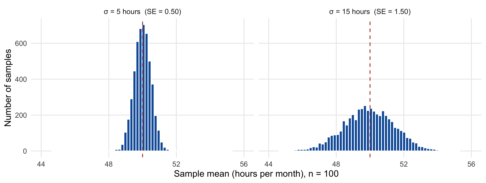
Figure 3.10: Sampling distributions for two populations with different variability (n = 100). The more the individuals differ, the more the sample means differ.
3.4.2 The square-root law: precision has diminishing returns
Because the sample size enters the formula as a square root, precision grows more slowly than the sample (Figure 3.11). To halve the standard error, you need four times as many observations. Going from 100 to 400 respondents halves the uncertainty; going from 400 to 1,600 halves it again — at four times the cost. This is why polls typically survey around 1,000 people and not 10,000: the tenfold cost would reduce the margin of error only from about 3 to about 1 percentage point.
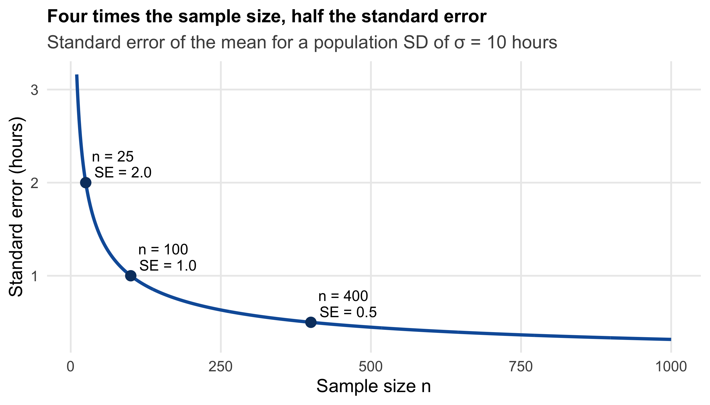
Figure 3.11: The standard error falls with the square root of the sample size.
TipTry it: what drives the standard error?
Change the sample size and the variability in the population. Both rows come from a population of students whose listening times have a mean of 50 hours and the standard deviation σ you choose (at σ = 10, this is the population from above). The upper row shows 200 randomly drawn individual students; the lower row shows the means of 200 samples of size n. The bars mark the middle 95% of each distribution. The number of dots (200) is only for display: drawing more samples would fill in the picture, but not change its width — only n and σ do that. In a real study, you have just one sample.
w2_data = {const rng = d3.randomLcg(42);const indiv = d3.randomNormal.source(rng)(50, w2_sigma);const jit = () => (rng() -0.5) *0.5;const n =Math.round(w2_n);const people =Array.from({length:200}, () => ({y:1+jit(),x:indiv(),g:"individual"}));const means =Array.from({length:200}, () => {let s =0;for (let i =0; i < n; i++) s +=indiv();return {y:jit(),x: s / n,g:"mean"}; });return {pts: people.concat(means),se: w2_sigma /Math.sqrt(n), n};}
Plot.plot({width:760,height:240,marginLeft:170,x: {label:"Hours per month",domain: [0,100]},y: {label:null,domain: [-0.55,1.55],ticks: [0,1],tickFormat: d => d ===1?"Individual students":`Sample means (n = ${w2_data.n})`},marks: [ Plot.ruleY([1], {x1:50-1.96* w2_sigma,x2:50+1.96* w2_sigma,stroke:"#dbe7f3",strokeWidth:40}), Plot.ruleY([0], {x1:50-1.96* w2_data.se,x2:50+1.96* w2_data.se,stroke:"#dbe7f3",strokeWidth:40}), Plot.dot(w2_data.pts, {x:"x",y:"y",r:2.5,fillOpacity:0.55,fill: d => d.g==="individual"?"#58585a":"#0f5da8"}), Plot.ruleX([50], {stroke:"#b03a2e",strokeDasharray:"4,3"}) ]})
html`<div class="unc-stats">Standard deviation of individuals: <b>σ = ${w2_sigma}</b> hours ·standard error of the mean: <b>σ/√n = ${w2_sigma} / √${w2_data.n} = ${w2_data.se.toFixed(2)}</b> hours ·to halve the standard error, you would need <b>n = ${(4* w2_data.n).toLocaleString("en")}</b></div>`
3.4.3 Two kinds of variation: standard deviation vs. standard error
The standard deviation and the standard error are easily confused, but they answer different questions (Figure 3.12):
The standard deviation describes how much individuals differ from each other — here, how much the listening times of students vary. It is a property of the data, and it does not shrink when you collect more data: with more students, you simply get a more precise picture of how much they differ.
The standard error describes how much sample means would differ from each other if we repeated the study — the precision of our estimate. It shrinks as the sample grows.
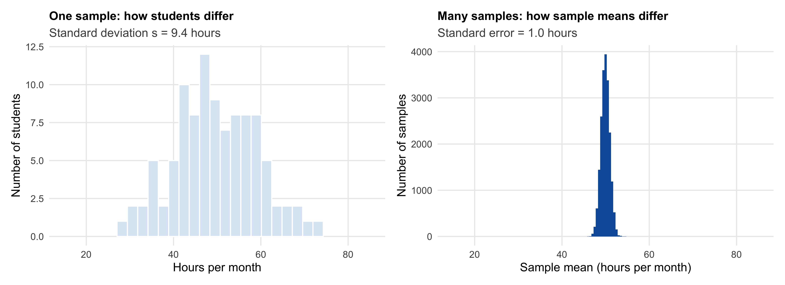
Figure 3.12: Two kinds of variation on the same scale: the listening times of the 100 students in one sample (left) and the means of 20,000 samples (right).
ImportantWhich one to report?
Report the standard deviation when you describe how much customers (or stores, or products) differ — “listening times vary considerably; the standard deviation is 10 hours”. Report the standard error (or a confidence interval, Section 3.6) when you describe how precisely you have estimated a mean — “the average listening time is 49 hours, with a standard error of 1 hour”. Charts that show “error bars” should always say which of the two the bars represent.
3.4.4 Estimating the standard error from one sample
The formula above has one catch: it requires the population standard deviation \(\sigma\), which we do not know — if we knew the population, we would not need a sample. In practice, we replace \(\sigma\) with the standard deviation of our sample, \(s\):
\[
SE_{\bar{x}} = \frac{s}{\sqrt{n}}
\]
For our first sample of 100 students (mean 49.24, standard deviation \(s\) = 10.44), this gives \(SE_{\bar{x}}\) = 10.44 / 10 = 1.04 hours — very close to the true value of 1.00. With a random sample of reasonable size, the sample standard deviation is a good estimate of the population standard deviation; the additional uncertainty it introduces is taken into account by the t-distribution (Section 3.6).
NoteUnder the hood: why divide by n − 1?
The sample standard deviation is computed as \(s = \sqrt{\frac{1}{n-1}\sum_{i=1}^n (x_i - \bar{x})^2}\) — dividing by \(n-1\), not by \(n\). The reason: the deviations are measured from the sample mean \(\bar{x}\), which is by construction the point closest to all observations in the sample. The deviations from \(\bar{x}\) are therefore, on average, slightly smaller than the deviations from the (unknown) population mean \(\mu\) would be. Dividing by \(n-1\) instead of \(n\) (Bessel’s correction) compensates for this downward bias. For large samples, the difference is negligible; R’s sd() and var() always use \(n-1\).
3.5 The central limit theorem
3.5.1 What if the data are not normal?
So far, our population was normally distributed — a convenient assumption, but a rare one in marketing. Listening times are more realistically right-skewed: most students listen a moderate amount, and a few enthusiasts listen a lot (Figure 3.13). The same is true for sales, streams, visits, and revenues.
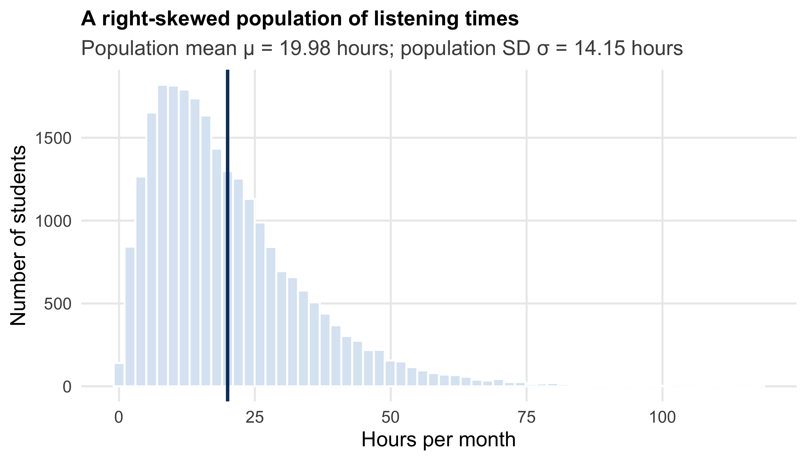
Figure 3.13: A more realistic, right-skewed population of listening times.
What happens to the sampling distribution now? Figure 3.14 shows the means of 10,000 samples, for four different sample sizes. With samples of size 1, the “sample means” are just individual students, and their distribution is as skewed as the population. But as the samples get larger, the distribution of the sample means becomes more and more symmetric and bell-shaped — and narrower.
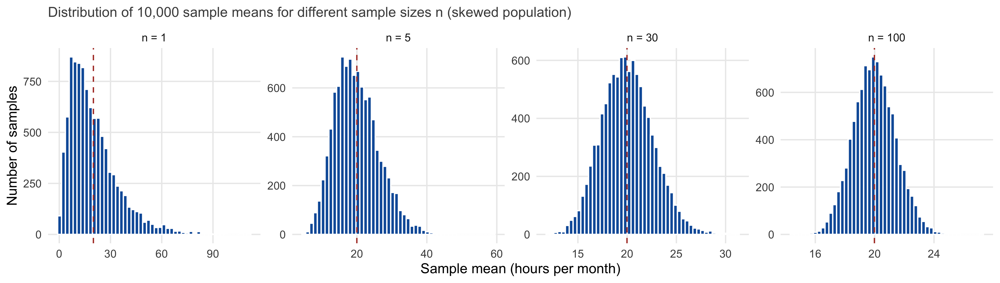
Figure 3.14: The central limit theorem at work: sample means from a skewed population become normally distributed as the sample size grows (note the different x-axes).
This is the central limit theorem: whatever the shape of the population distribution, the distribution of sample means approaches a normal distribution as the sample size grows — centered on the population mean, with a width equal to the standard error \(\sigma / \sqrt{n}\). (The theorem requires that the population has a finite mean and variance — true for virtually all variables you will encounter.)
TipTry it: the central limit theorem
Choose the shape of the population and the sample size n. The first chart shows the population; the second chart shows the means of 3,000 samples of size n, together with the normal distribution predicted by the central limit theorem (orange line). How large does n have to be before the orange line fits? The number of samples (3,000) only makes the picture sharp; it is the sample size n that changes the shape.
viewof w3_shape = Inputs.select( ["Symmetric (normal)","Right-skewed (a few heavy listeners)","Two groups (casual and heavy listeners)","Uniform (every value equally likely)"], {label:"Population"})
w3_sim = {const popn =Float64Array.from({length:20000}, () =>w3_gen());const mu = d3.mean(popn), sd = d3.deviation(popn), n = w3_n, reps =3000;const means =Float64Array.from({length: reps}, () => { let s =0;for (let i =0; i < n; i++) s +=w3_gen();return s / n; });const se = sd /Math.sqrt(n);const lo = d3.min(means), hi = d3.max(means), bw = (hi - lo) /40;const curve = d3.range(lo, hi, (hi - lo) /200).map(x => ({x,y: reps * bw *Math.exp(-0.5* ((x - mu) / se) **2) / (se *Math.sqrt(2*Math.PI))}));return {popn, means, mu, sd, se, lo, hi, bw, curve};}
{const left = Plot.plot({width:380,height:260,marginLeft:55,x: {label:"Hours per month"},y: {label:"Students",grid:true},marks: [Plot.rectY(w3_sim.popn, Plot.binX({y:"count"}, {x: d => d,thresholds:40,fill:"#dbe7f3"})), Plot.ruleX([w3_sim.mu], {stroke:"#b03a2e",strokeDasharray:"4,3",strokeWidth:2})] });const right = Plot.plot({width:380,height:260,marginLeft:55,x: {label:"Sample mean"},y: {label:"Samples",grid:true},marks: [ Plot.rectY(w3_sim.means, Plot.binX({y:"count"}, {x: d => d,thresholds: d3.range(w3_sim.lo, w3_sim.hi+ w3_sim.bw, w3_sim.bw),fill:"#0f5da8"})), Plot.line(w3_sim.curve, {x:"x",y:"y",stroke:"#d99a2b",strokeWidth:2.5}), Plot.ruleY([0]) ] });returnhtml`<div style="display:flex; flex-wrap:wrap; gap:1em;"> <div><b>Population</b>${left}</div> <div><b>Means of 3,000 samples of size n = ${w3_n}</b>${right}</div></div>`;}
html`<div class="unc-stats">Population: mean <b>${w3_sim.mu.toFixed(1)}</b>, SD <b>${w3_sim.sd.toFixed(1)}</b> ·sample means: mean <b>${d3.mean(w3_sim.means).toFixed(1)}</b>, SD <b>${d3.deviation(w3_sim.means).toFixed(2)}</b>(predicted standard error σ/√n = ${w3_sim.se.toFixed(2)})</div>`
What to look for. Even for the two-group population, where no single student is “average”, the sample means form a bell shape once n is moderately large. The more the population departs from a normal distribution, the larger n needs to be.
3.5.2 Why the central limit theorem matters
The central limit theorem is the reason why the methods in this and the following chapters work for real marketing data, which are rarely normally distributed. We do not need the data to be normal — we need the sampling distribution of the mean to be (approximately) normal, and the central limit theorem guarantees this for sufficiently large samples.
How large is “sufficiently large”? A common rule of thumb is \(n \geq 30\), but it is no law of nature: for roughly symmetric data, much smaller samples suffice; for extremely skewed data — like the streams in Chapter 2, where a few tracks have billions of streams — even several hundred observations may not be enough. When in doubt, look at the data first (Section 2.7).
3.6 Confidence intervals
3.6.1 From a point estimate to an interval estimate
Reporting “the average listening time is 49.2 hours” gives a point estimate — our single best guess. It hides the uncertainty: the next sample would give a different number. An interval estimate adds the uncertainty: “the average listening time is between 47.2 and 51.3 hours”. Such an interval is called a confidence interval.
A helpful image is that of casting a net (Radziwill 2015). We cannot see the true population mean, but we can throw a net around our estimate that catches it most of the time. How big the net must be depends on two things: how sure we want to be of catching the truth, and how much our estimate wobbles from sample to sample.
\[
\text{Confidence interval} = \text{estimate} \pm \underbrace{\text{critical value}}_{\text{how sure we want to be}} \times \underbrace{\text{standard error}}_{\text{how much the estimate wobbles}}
\]
3.6.2 Constructing a 95% confidence interval
From the central limit theorem, we know that sample means are approximately normally distributed around the population mean, with a standard deviation equal to the standard error. For a normal distribution, 95% of all values lie within 1.96 standard deviations of the mean. Hence, in 95% of all samples, the sample mean is within 1.96 standard errors of the population mean — and, turned around, the interval
\[
\bar{x} \pm 1.96 \times SE_{\bar{x}}
\]
contains the population mean in 95% of all samples. For our sample of 100 students: 49.24 ± 1.96 × 1.04 = [47.19; 51.29] hours. The true population mean (49.93) is indeed inside.
3.6.3 What “95% confidence” means — and what it does not
The confidence refers to the method, not to a single interval. If we repeated the study many times and computed a 95% confidence interval each time, about 95% of these intervals would contain the true population mean — and about 5% would miss it. Figure 3.15 shows this for 100 samples. In this particular set of samples, 9 intervals miss — more than the “expected” five. This is not an error but sampling variation once more: whether an interval hits is itself a matter of chance, so the number of hits in a batch of 100 varies, typically between about 90 and 99. Only in the long run do 95% of the intervals contain the true value — try it with the widget below.
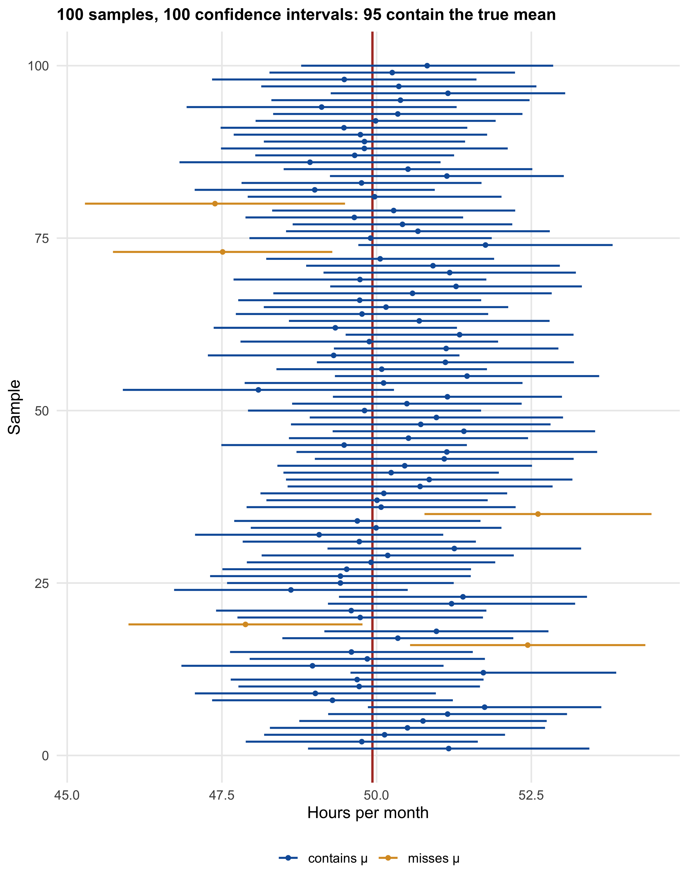
Figure 3.15: 95% confidence intervals from 100 random samples of 100 students each. The vertical line marks the true population mean; intervals that miss it are shown in orange.
In Figure 3.15, exactly five intervals miss — the textbook case. Do not expect every batch of 100 to look like this: whether a particular interval hits is itself a matter of chance, so the number of misses varies from batch to batch, typically between about 1 and 10, and only on average is it 5. “95%” is the long-run hit rate of the procedure; the widget below lets you watch the count fluctuate and settle.
WarningA common misinterpretation
For a specific interval, it is tempting to say “there is a 95% probability that the true mean lies between 47.2 and 51.3.” Strictly speaking, this is not correct: the true mean is a fixed number, and a specific interval either contains it or it does not — we just do not know which. The correct statement is about the procedure: 95% of the intervals constructed this way contain the true value. In practice, it is fine to say “we are 95% confident that the average listening time lies between … and …”, as long as you remember that roughly one in twenty such intervals is wrong. Note also that values in the middle of the interval are not “more true” than values near its edges.
TipTry it: how often does the net catch the truth?
Each click draws 100 new samples from the population of listening times and computes a confidence interval for each. Intervals that contain the true mean (red line) are blue; those that miss it are orange. Change the sample size and the confidence level, and watch how the width of the intervals and the number of misses change.
html`<div class="unc-stats"><b>${w4_sim.hits}</b> of 100 intervals contain the true mean (expected: about ${parseFloat(w4_level)} on average — the count varies from batch to batch) ·critical value: ${w4_sim.crit.toFixed(2)} · typical width of an interval: ±${(w4_sim.crit* w_sigma /Math.sqrt(w4_sim.n)).toFixed(2)} hours</div>`
3.6.4 Confidence level and width: a trade-off
A 95% level is a convention, not a law. If you want to be more confident of catching the true value, you need a wider net: a 99% interval uses a critical value of 2.58 instead of 1.96 and is correspondingly wider; a 90% interval (critical value 1.64) is narrower (Figure 3.16). The only way to get an interval that is both narrow and reliable is a larger sample.
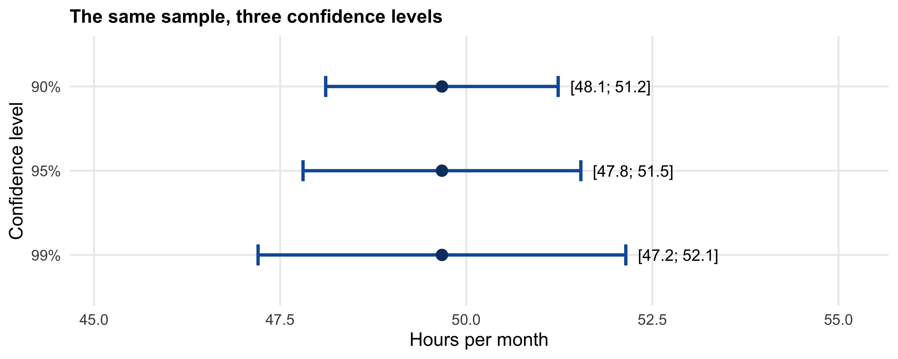
Figure 3.16: The same sample, three confidence levels: more confidence requires a wider interval.
3.6.5 Small samples: the t-distribution
The critical value of 1.96 assumes that we know the standard error exactly. In practice, we estimate it from the sample (\(s / \sqrt{n}\)), which adds a little extra uncertainty — noticeable in small samples. The t-distribution accounts for this: it looks like the normal distribution but has “fatter tails”, and it depends on the sample size via the degrees of freedom (\(n - 1\)). Table 3.4 shows the critical values for a 95% interval.
Table 3.4: Critical values of the t-distribution for a 95% confidence interval
Sample size n
10
20
30
100
very large
Critical value (95%)
2.26
2.09
2.05
1.98
1.96
For samples of about 100 or more, the difference to 1.96 is negligible; for small samples, it matters. You do not need to look these values up: R’s t.test() computes confidence intervals with the correct t value automatically (Section 3.8).
3.7 Uncertainty in shares: the margin of error of a poll
3.7.1 The same question in politics: a poll
The uncertainty of a sample estimate appears outside of marketing, in a form you have probably seen many times. In September 2024, a few weeks before the US presidential election, a news report on a national poll ended with the following sentence:
“The poll was conducted Sept. 13–17 and surveyed 1,000 registered voters nationally. The margin of error is plus or minus 3.1 percentage points.”
— NBC News (2024)
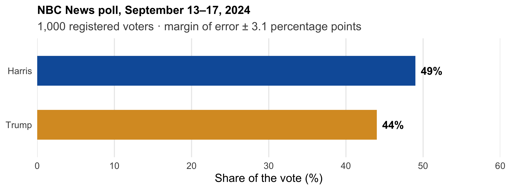
Figure 3.17: The result of the NBC News poll of September 2024. Data: NBC News; own illustration.
Sentences like this appear under almost every poll, and most readers skip them. Yet they raise exactly the questions of this chapter, for a categorical outcome. More than 150 million people voted in that election — how can 1,000 respondents tell us anything about them? Where does “plus or minus 3.1 percentage points” come from, and what does it actually promise? And why do pollsters survey 1,000 people, and not 10,000?
A first hint lies in a fact every regular reader of polls knows: polls taken at the same time rarely agree. Figure 3.18 simulates a campaign in which we know the true support of both candidates on every day. Each poll draws a different random sample of voters — so polls taken in the same week come to visibly different results, scattered around the truth. Most of them, however, stay within about ± 3 points of it.
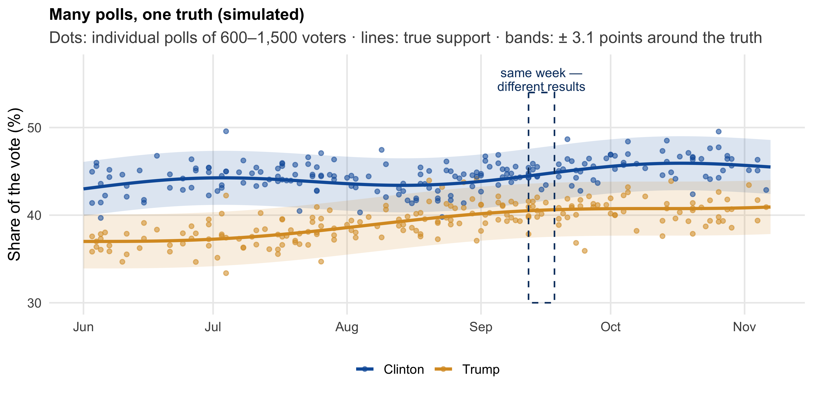
Figure 3.18: Many polls, one truth: simulated polls during a campaign. Each dot is one poll; the lines show the true support, which we know because the data are simulated; the bands mark ± 3.1 points around the truth.
Eight years earlier, the polls had delivered a lesson in what the margin of error does not promise. In the 2016 election, state-level polls in several Midwestern states underestimated support for Donald Trump by more than their margins of error. Post-election analyses pointed to voters who decided late and to samples in which voters without a college degree were underrepresented — and not properly corrected for (Kennedy et al. 2018). This is the systematic error of Section 3.2: a margin of error quantifies random error only, and no sample size protects against a sample that is systematically different from the population.
3.7.2 The standard error of a share
Many marketing questions are about shares (proportions) rather than means: the share of voters who support a candidate, the share of visitors who buy (the conversion rate), the share of customers who would recommend a brand. The logic is exactly the same as for the mean — a share is, in fact, the mean of a 0/1 variable (Section 2.3) — only the formula for the standard error looks different:
This is exactly the number in the news report. The poll found 49% for Kamala Harris and 44% for Donald Trump (Figure 3.17). Each share comes with its margin of error of about ± 3 points (Figure 3.19).
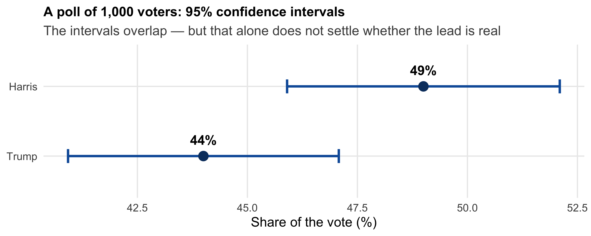
Figure 3.19: The NBC News poll of September 2024 (1,000 registered voters) with 95% confidence intervals for the two candidates’ vote shares. Data: NBC News; own illustration.
Two practical lessons follow. First, the margin of error of the lead is larger than the margin of error of each share: the 5-point lead in this poll has a margin of error of roughly ± 6 points, about twice the reported margin — because an error in one candidate’s share usually comes with an error in the opposite direction in the other’s. Even a 5-point lead in a poll with a ± 3.1-point margin of error is therefore not a safe lead. Second, the reported margin of error covers only random error. It says nothing about who was reachable, who refused to answer, or who changed their mind after the poll — the errors that mattered in 2016.
NoteUnder the hood: three options — Harris, Trump, or neither
The poll’s shares do not add up to 100%: 49% Harris, 44% Trump, and 7% for other candidates or undecided. Which share goes into the formula?
Each share on its own. The standard error of a share only asks “this option or not”: for Harris, \(\hat{p}\) = 0.49 against everything else (Trump, others, undecided), so \(\sqrt{0.49 \cdot 0.51 / 1{,}000}\) = 1.6 points. The same for Trump with \(\hat{p}\) = 0.44, and for the undecided with \(\hat{p}\) = 0.07 — whose interval is much narrower (± 1.6 points), because shares near 0 or 1 vary less. A third option changes nothing about how each share’s interval is computed.
The lead. The difference between two shares from the same poll is a different matter, because they are not independent: a respondent who moves to Harris leaves Trump (or the undecided), so the two shares move in opposite directions. The standard error of the lead is
For the poll: \(\sqrt{(0.49 + 0.44 - 0.05^2) / 1{,}000}\) = 3.0 points, so the lead of 5 points has a margin of error of about ± 6 points — the “roughly twice” from above. With a third option, this formula still applies; it is the one to use whenever two shares come from the same sample. (For two shares from different groups, e.g., the conversion rates of two versions of a page, the groups are independent and the formula of Chapter 4 applies instead.)
Excluding the undecided. Polls often report a “two-way” result in which the undecided are left out: Harris 53%, Trump 47% among decided voters. This is a share in a smaller sample — the 930 decided respondents — and its margin of error must be computed with that smaller \(n\): \(1.96 \times \sqrt{0.53 \cdot 0.47 / 930}\) = 3.2 points. Dropping the undecided makes the lead look larger and the margin of error slightly wider; it does not make the estimate more certain.
3.7.4 How many respondents do you need?
Because of the square-root law (Section 3.4), the margin of error shrinks ever more slowly as the sample grows (Figure 3.20). With the roughly 120 respondents of a typical group project, a share of about 50% comes with a margin of error of about ± 9 percentage points — useful to keep in mind before you interpret a difference of 5 points between two groups.
NoteWhy 1,000 respondents work for Austria — and for the US
Notice what the margin-of-error formula does not contain: the size of the population. A random sample of 1,000 voters gives a margin of error of about ± 3 points, whether the population consists of 9 million Austrians or 340 million Americans. Think of tasting soup: if it is well stirred, one spoonful tells you how salty it is — whether the pot holds one liter or a hundred. What matters is the size of the spoon, not the size of the pot.
This answers the question from the beginning of the chapter — how 1,000 respondents can tell us anything about more than 150 million voters — and it has a practical consequence: market research costs roughly the same in small and large markets. A survey that delivers a given precision costs about as much in Austria as in Germany or the US, but it has to be paid for out of a much smaller market. Relative to the size of the business at stake, precise market research is therefore considerably more expensive in small countries.
(The population size only starts to matter when the sample is a substantial part of the population — say, more than about 5% of it. Then the uncertainty is somewhat smaller than the formula suggests, because there is little left that we have not observed.)
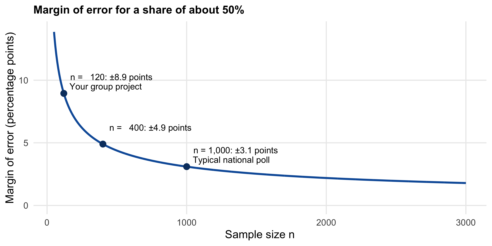
Figure 3.20: The margin of error of a share of about 50% (95% confidence) for different sample sizes.
TipTry it: a margin-of-error calculator
Set the sample size and the observed share, and read off the margin of error. Or work backwards: choose the margin of error you are willing to accept and see how many respondents you need.
html`<div class="unc-stats">With <b>n = ${w5.n.toLocaleString("en")}</b> and an observed share of <b>${w5_p}%</b>:margin of error <b>± ${(100* w5.me).toFixed(1)}</b> percentage points, i.e., 95% confidence interval<b>[${Math.max(0,100* (w5.p- w5.me)).toFixed(1)}%; ${Math.min(100,100* (w5.p+ w5.me)).toFixed(1)}%]</b> ·for a margin of error of ± ${w5_target} points (dashed line), you need about <b>n = ${w5.need.toLocaleString("en")}</b></div>`
The same formula applies to many marketing metrics: the conversion rate of a landing page, the click-through rate of an ad, the share of customers who churn. And it applies separately to each group of an A/B test — which is where the next chapter picks up.
3.8 Uncertainty in R
In practice, we never simulate a population — we have one sample and want an estimate with its uncertainty. Let us take the perspective of a market researcher who has surveyed a random sample of 100 WU students about their monthly listening time. (We draw the sample from our skewed population, but from now on we pretend we had never seen the population.)
3.8.1 A confidence interval for a mean — step by step
n <-nrow(listening)xbar <-mean(listening$hours)s <-sd(listening$hours)se <- s /sqrt(n) # standard error of the meancrit <-qt(0.975, df = n -1) # critical value of the t-distribution (95%)c(mean = xbar, se = se, lower = xbar - crit * se, upper = xbar + crit * se)
mean se lower upper
19.779464 1.486716 16.829496 22.729432
qt(0.975, df = n - 1) returns the critical value that cuts off 2.5% in each tail of the t-distribution (qnorm(0.975) would give 1.96 for the normal distribution). We use 0.975 and not 0.95 because the 5% of intervals that miss are split between the two ends.
3.8.2 The same in one line
The function t.test() computes the confidence interval directly (the test itself is the topic of the next chapter):
3.8.3 Back to the A/B test: confidence intervals per group
For several groups at once, compute the ingredients with group_by() and summarise(). Let us return to the Smart Mix A/B test from Section 3.1.1:
ab_test |>group_by(group) |>summarise(n =n(),mean =mean(hours),se =sd(hours) /sqrt(n),lower = mean -qt(0.975, n -1) * se,upper = mean +qt(0.975, n -1) * se )
# A tibble: 2 × 6
group n mean se lower upper
<fct> <int> <dbl> <dbl> <dbl> <dbl>
1 Smart Mix 200 23.2 1.15 21.0 25.5
2 Control 200 20.0 0.968 18.1 21.9
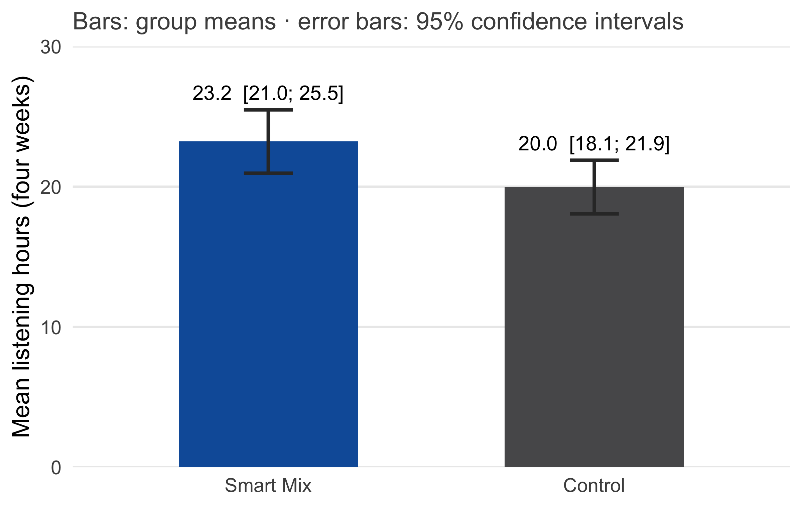
Figure 3.21: The dashboard view of the A/B test from Section 3.1.1 — now with 95% confidence intervals.
Compare Figure 3.21 with Figure 3.1 at the start of the chapter: the same two bars, but now each carries its margin of uncertainty. Each group mean now comes with its own margin of uncertainty: the true average listening time of all users with Smart Mix is plausibly somewhere in the first interval, that of all users without it somewhere in the second. The two intervals overlap — does that mean there is no effect? Not necessarily: what matters for the decision is the uncertainty of the difference between the groups, which has its own standard error. The confidence interval that t.test() reported in Section 3.1.1 is exactly that — an interval for the difference. How it is computed, and what the t value and the p-value add, is the subject of the next chapter.
3.8.4 A confidence interval for a share
Back to the poll from Section 3.7: 1,000 registered voters, 49% for Harris, 44% for Trump. A share is the mean of a yes/no variable, and its standard error follows from Section 3.7 — so the interval is built exactly like the one for a mean:
Figure 3.22: The NBC poll of September 2024: vote shares with their 95% confidence intervals.
Each share comes with a margin of about ± 3 percentage points — the “± 3.1” of the news report, now computed from the poll’s own numbers. The function prop.test() computes a confidence interval for a share directly; its input is the number of “successes” and the sample size:
The two intervals do not match exactly, and that is not a mistake. Our hand calculation is the simple formula from Section 3.7 (estimate ± 1.96 standard errors, symmetric around the share). prop.test() uses a different formula, the Wilson score interval (with a small continuity correction), which is more reliable for small samples and for shares close to 0 or 1: it is slightly asymmetric and shifted toward 50%. With 1,000 voters and a share of 49%, the difference is a few tenths of a percentage point at each end — both intervals tell the same story. For reporting, either is fine; prop.test() is the one to use when the share is small or the sample is.
3.9 What confidence intervals do not tell you
Confidence intervals are one of the most useful tools in this course — and one of the most over-interpreted. Keep three limits in mind.
1. They cover random error only. A confidence interval quantifies how much the estimate would vary across random samples. It says nothing about systematic error: a biased sample produces a precise but wrong estimate, and a larger biased sample produces a more precise, equally wrong one. The 2016 polls (Section 3.1), the self-selected comparisons of Chapter 1, and the chart-only data of Section 2.5.6 are all problems that no confidence interval can reveal.
2. They describe the precision of an estimate, not the spread of individuals. A narrow interval for the average listening time does not mean that all students listen about the same amount (Figure 3.12).
3. They are statements about a procedure. Roughly one in twenty 95% intervals misses the true value — and if you compute many intervals (for many segments, many metrics, many weeks), some will miss. We return to this “multiple comparisons” problem in the next chapter.
With these tools in place, we can now return to the question that opened this chapter: Smart Mix users listened 3.2 hours more — is this difference larger than what we would expect from sampling variation alone? The difference between two means has its own standard error, and the logic of this chapter carries over one to one. That is the subject of the next chapter, where we read the complete output of the A/B test.
Learning check
(LC3.1) In the Smart Mix A/B test, users with the new feature listened about 3 hours more than users without it. Explain why this difference alone does not tell the product team whether Smart Mix increases listening among all users — and what additional information they need.
(LC3.2) A poll of 1,000 voters reports a margin of error of ± 3.1 percentage points. (a) Show how this number is calculated. (b) Name one source of error that the margin of error does not cover.
(LC3.3) You double the sample size of your customer survey from 400 to 800 respondents. By what factor does the standard error of the mean change?
(LC3.4) As a marketing manager at a streaming service, you want to know the average weekly listening time of your users. In a random sample of 180 users, the mean listening time is 7.34 hours per week and the standard deviation is 6.87 hours. Compute the 95% confidence interval (use 1.96 as the critical value).
(LC3.5) Which statements about the standard deviation (SD) and the standard error (SE) are correct?
(LC3.6) Which statement is the correct interpretation of a 95% confidence interval?
(LC3.7) The revenue per customer in your online shop is strongly right-skewed. Can you still compute a confidence interval for the average revenue per customer using the methods of this chapter? Explain, and state what the answer depends on.
(LC3.8) An online survey on your website, which anyone can answer, collects 20,000 responses on customer satisfaction. The 95% confidence interval for the mean satisfaction is very narrow. Why might it still be misleading?
References
Kennedy, Courtney, Mark Blumenthal, Scott Clement, et al. 2018. “An Evaluation of the 2016 Election Polls in the United States.”Public Opinion Quarterly 82 (1): 1–33.
Radziwill, Nicole M. 2015. Statistics (the Easier Way) with R. Lapis Lucera.